What Is Digital Fabrication
Turning digital designs into physical objects. Digital fabrication combines CAD (Computer Aided Design) and CAM (Computer Aided Manufacturing).
Examples: CNC mills, 3D printers, laser cutters, waterjets, vinyl cutters.
Digital design → real object
Three ways machines make parts
CNC & Numerical Control
What is CNC?
- CNC = Computer Numerical Control
- Machines follow coded instructions to move precisely.
- Automates cutting, milling, drilling, and additive processes.
- Usually referring to CNC mills, but can be routers, welders, benders, wire EDM machines, etc.
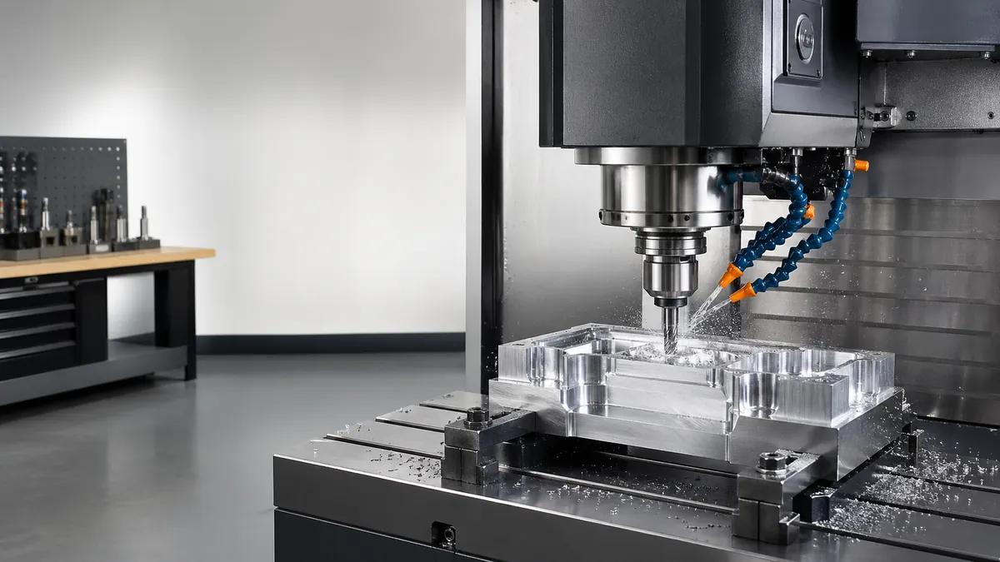
Before CNC: Numerical Control
- Early systems used punched cards/tape.
- Machines followed pre-set paths mechanically.
- No digital computers — limited flexibility.
- Multiple spindles
A tracer mill follows a physical template with a stylus, and the cutting spindles copy that motion. With several spindles, it can cut several copies of the same part at once. Changing the part means making a new template, which is the flexibility CNC later solved: changing a part became editing a program.
NC machines appeared in the 1950s. Adding a computer to the controller (CNC) became common in the 1970s.
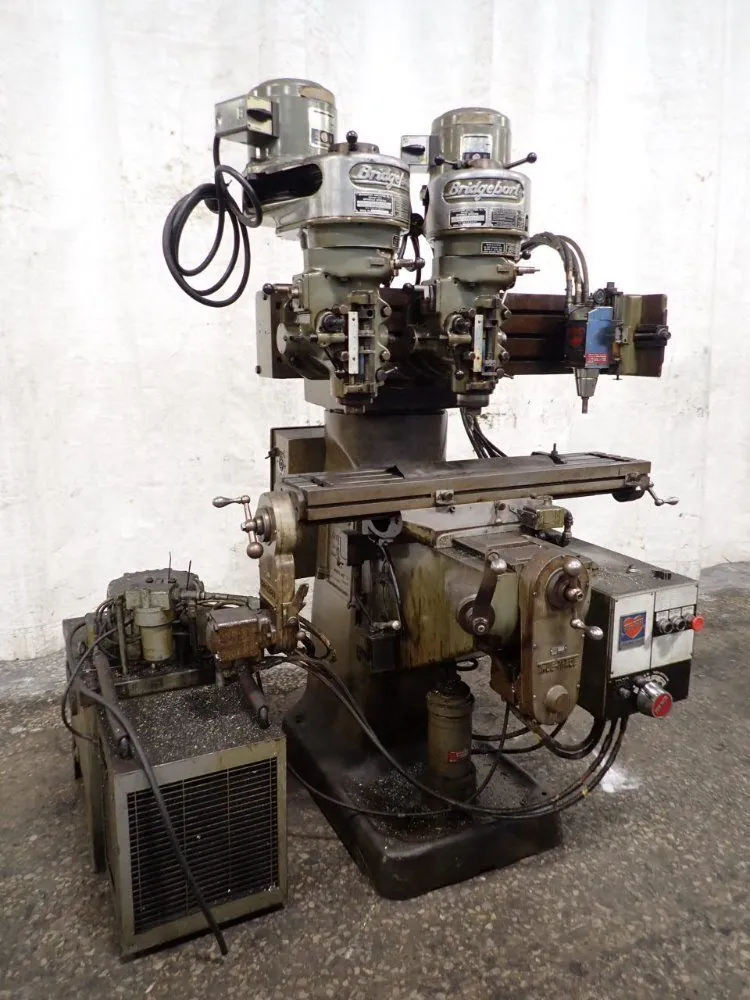
Manual Machining vs CNC
- Fast(er) setup
- Easy(er) changes
- Great for prototypes
- Automated repeatability
- Ideal(er) for production
- Precise (or at least as precise as the machine)
CNC Coolant
Cutting makes heat and chips. Coolant and lubrication methods trade cooling, lubrication, chip clearing, and mess against each other.
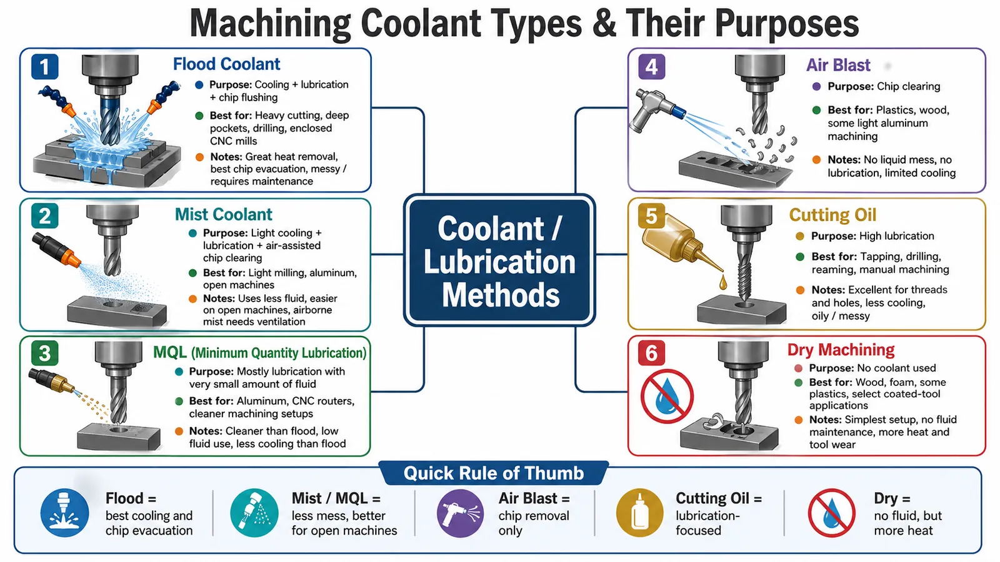
| Method | Purpose | Best for | Notes |
|---|---|---|---|
| Flood coolant | Cooling + lubrication + chip flushing | Heavy cutting, deep pockets, drilling, enclosed CNC mills | Great heat removal, best chip evacuation, messy / requires maintenance |
| Mist coolant | Light cooling + lubrication + air-assisted chip clearing | Light milling, aluminum, open machines | Uses less fluid, easier on open machines, airborne mist needs ventilation |
| MQL (Minimum Quantity Lubrication) | Mostly lubrication with a very small amount of fluid | Aluminum, CNC routers, cleaner machining setups | Cleaner than flood, low fluid use, less cooling than flood |
| Air blast | Chip clearing | Plastics, wood, some light aluminum machining | No liquid mess, no lubrication, limited cooling |
| Cutting oil | High lubrication | Tapping, drilling, reaming, manual machining | Excellent for threads and holes, less cooling, oily / messy |
| Dry machining | No coolant used | Wood, foam, some plastics, select coated-tool applications | Simplest setup, no fluid maintenance, more heat and tool wear |
G-Code Basics
- Machine language for CNC.
- Commands include: Motion (X, Y, Z), Speed & Tool Changes.
- Shared across printers, mills, and cutters.
- CAM (MasterCAM, Fusion 360, Slicers) writes it for you.
| Code | Meaning | Used on |
|---|---|---|
G0 / G1 | Rapid move / straight-line move at feed rate | Every CNC machine |
X Y Z | Target position on each axis | Every CNC machine |
F | Feed rate (speed), usually mm/min | Every CNC machine |
E | Extruder position (filament pushed) | 3D printers |
M104 / M109 | Set hotend temperature / set and wait | 3D printers |
M3 / M5, S | Spindle or laser on / off, and its speed or power | Mills, routers, many lasers |
M6 T2 | Tool change to tool 2 | Mills with tool changers |
What Is 3D Printing
- Additive process: builds objects layer by layer.
- Turns digital models into real parts.
- Expiration of patents mid 2000s to 2010s (2009).
- Founded in 2009 by former RepRap community members.
- Early printers like the Cupcake CNC and Thing-O-Matic were open-source kits.
- Helped popularize FDM/FFF printing for hobbyists.
- Later moved toward closed-source designs with the Replicator series.
- Founded in 2011 from MIT Media Lab.
- Form 1 introduced affordable SLA resin printing to consumers.
- Brought high-resolution printing from industrial labs to desktops.
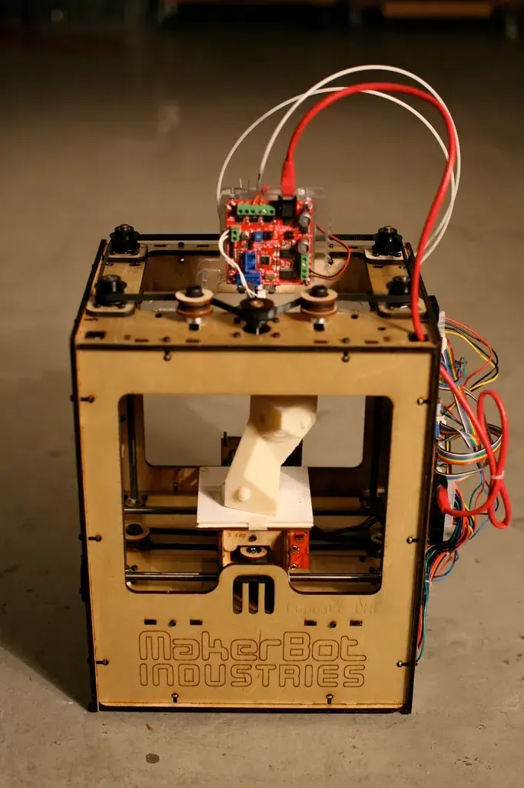
Timeline
Printing Technologies
Common 3D printing technologies
- FDM/FFF: Fused Deposition Modeling™ / Fused Filament Fabrication. (FDM is Stratasys's trademark, which is why the open community says FFF.)
- SLA/MSLA: Stereolithography or Masked Stereolithography (curing resin by UV)
- SLS: Selective Laser Sintering (Powder Printing)
- MJF: HP Multi Jet Fusion (powder + inkjet agents, fused by heat)
- Binder Jet: powder + inkjet-printed liquid binder (glue)
- Emerging: Volumetric & Gel Printing
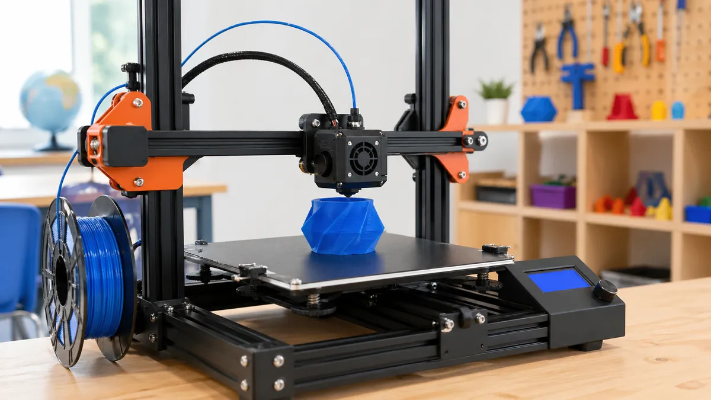
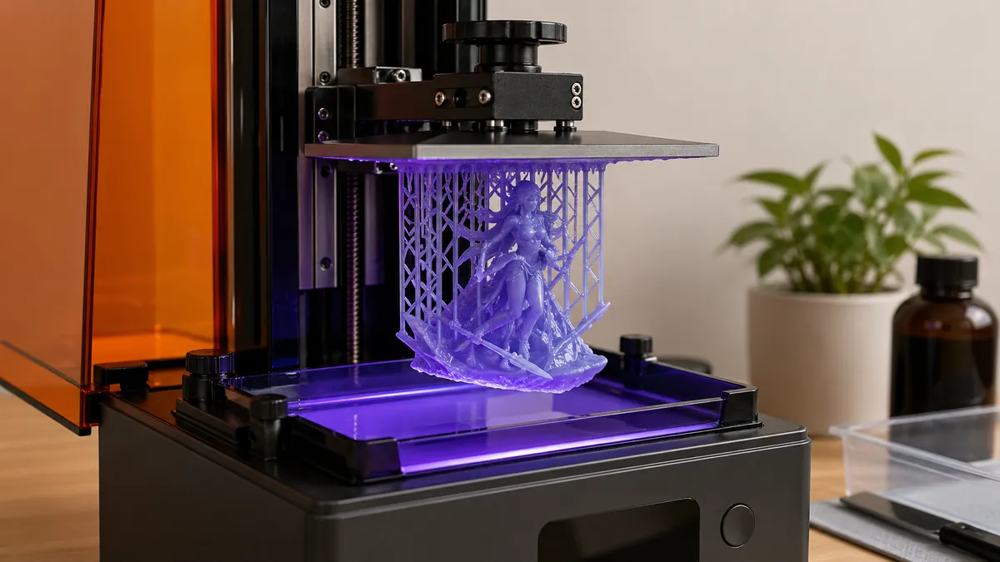
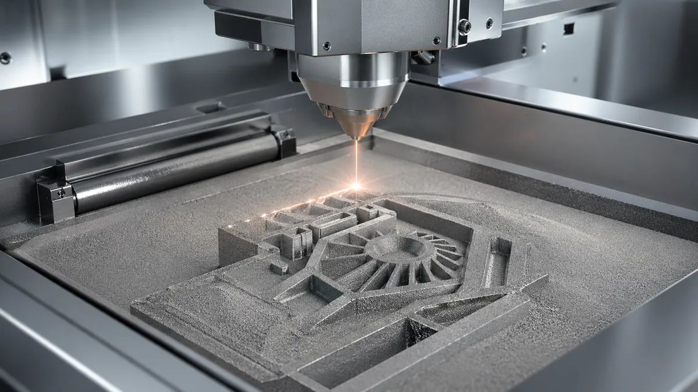
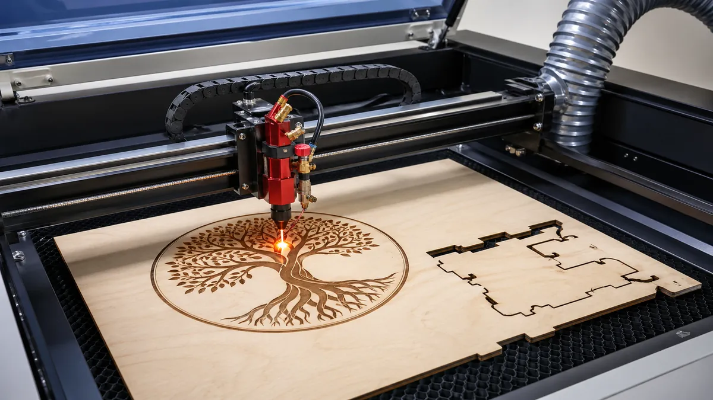
MJF vs Binder Jet
Both spread a thin layer of powder and use inkjet heads, like a paper printer, to mark each layer. What the ink does is different.
Advantages & disadvantages
| Tech | Cost | Known for | Notes |
|---|---|---|---|
| FDM | $ | StrengthSupport | Cheap, strong, lower resolution, support material |
| SLA | $$ | DetailMessy | High resolution, can be very fast. Resin is messy, smelly, toxic, needs wash & cure, some resins can be brittle (prototype injection molds) |
| SLS | $$$$ | StrengthPowder | Pricey, not consumer friendly (breathing hazard) |
| MJF | $$$ | StrengthPowder | Fast and durable, inefficient unless print volume is filled (relatively affordable commercially) (can be dyed) |
Cost • Strength • Detail • Cleanup
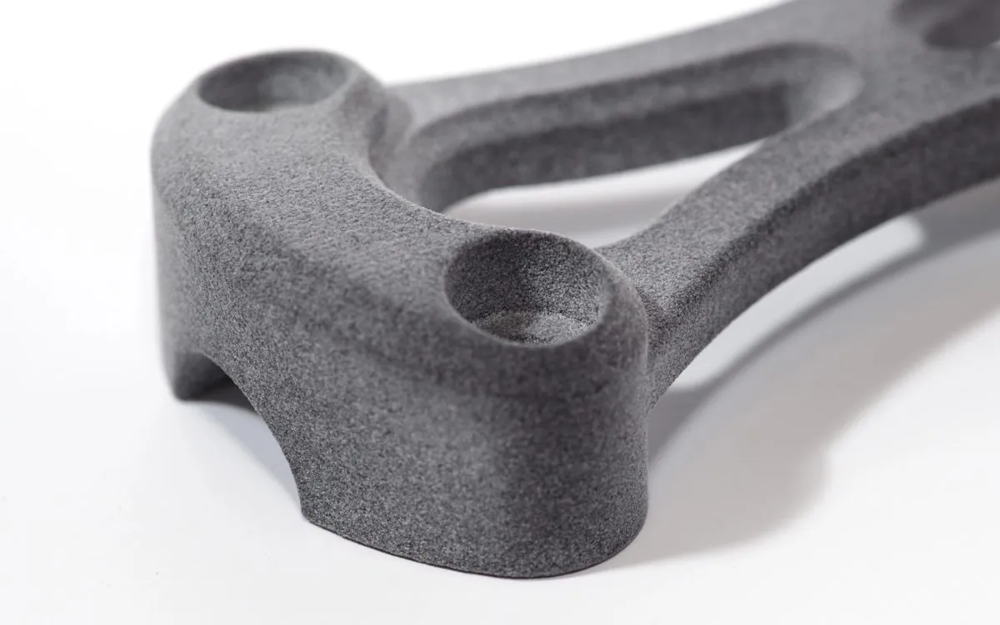
Metal 3D printing
- Methods: Binder Jet, SLM, DMLS
- Pros: High strength, real metal
- Cons: Shrinkage, expensive post-processing
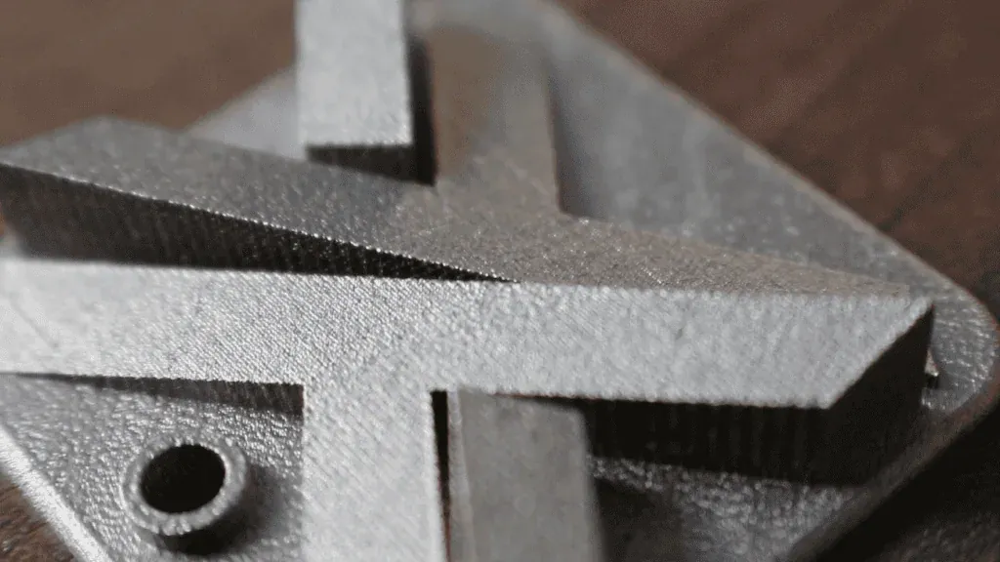
Supports in FDM
- Prevent overhangs and sagging.
- Avoid supports: design ≤45° angles.
Types
Infill
What is infill?
- The internal structure of a 3D print between outer walls.
- Balances strength, weight, and print time.
General tips
- Higher infill % = stronger but heavier. (with exceptions)
- 15–25% is typical for general use.
- Solid (100%) infill is uncommon on consumer 3D printers due to inconsistent extrusion.
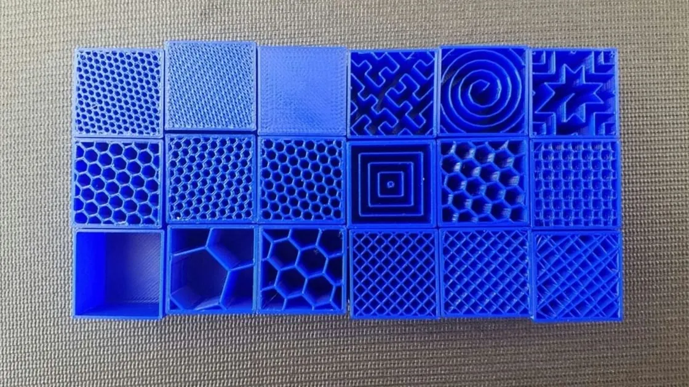
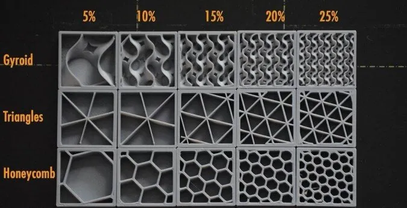
Infill tradeoffs
Infill changes weight, print time, and internal support — but walls and orientation often matter more.
Common patterns
Orientation & Layer Strength
Print orientation
- Affects surface finish, strength, and supports.
- Choose orientation based on function and appearance.
Layer direction & strength
FDM prints behave like laminated material: the part is usually weaker between layers than within a layer.
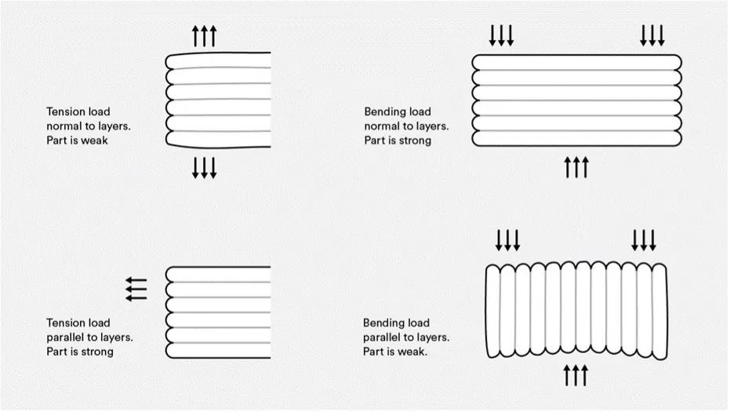
Example: a hook printed standing up can snap along a layer line. The same hook printed lying flat carries the load along its layers and holds much more.
Motion Systems & Printers
Motion systems in FDM
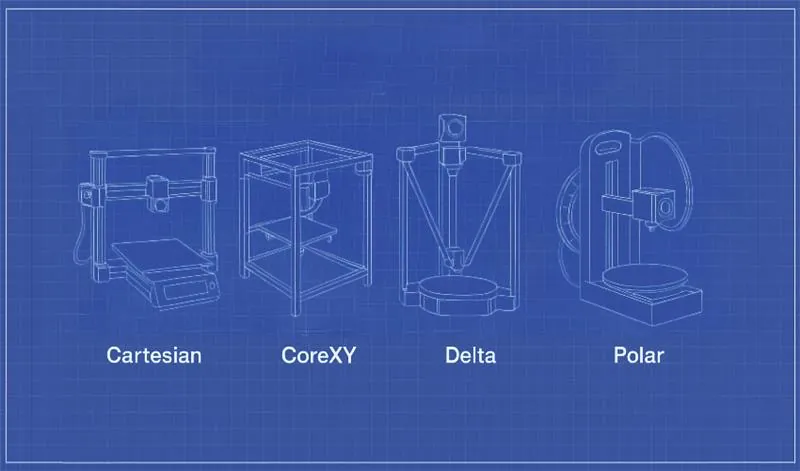
Common printers
Cartesian / Bedslinger printers
- Examples: Prusa MK3, Ender 3
- Build plate (bed) moves in Y-axis while the toolhead moves in X and Z.
- Simple, affordable, and easy to maintain.
- The Prusa lineage traces back to the RepRap Project — an open-source movement to create self-replicating 3D printers.
CoreXY printers
- Examples: Bambu P1S, Voron 2.4
- The bed moves only in Z, while two belts control X and Y together.
- Allows faster, more rigid motion with less vibration.
- Popular for speed, accuracy, and compact frames.
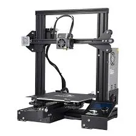
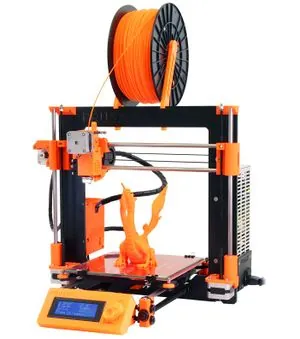
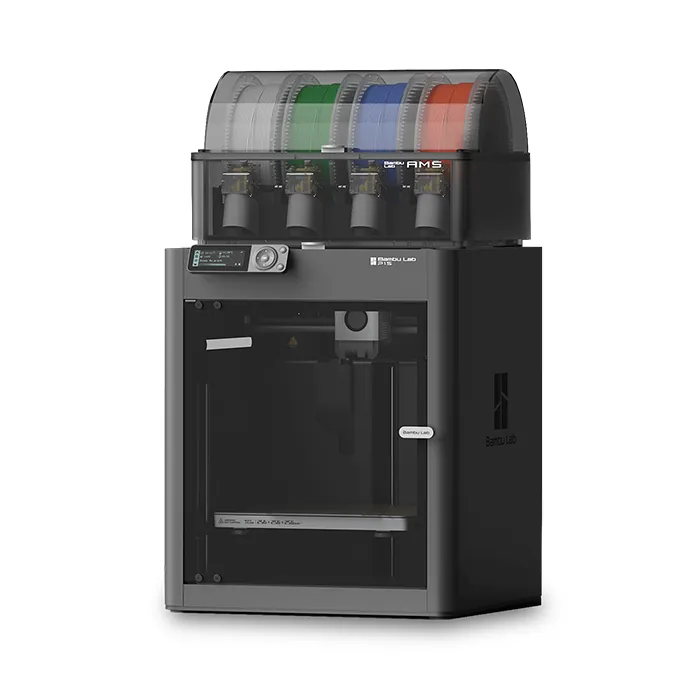
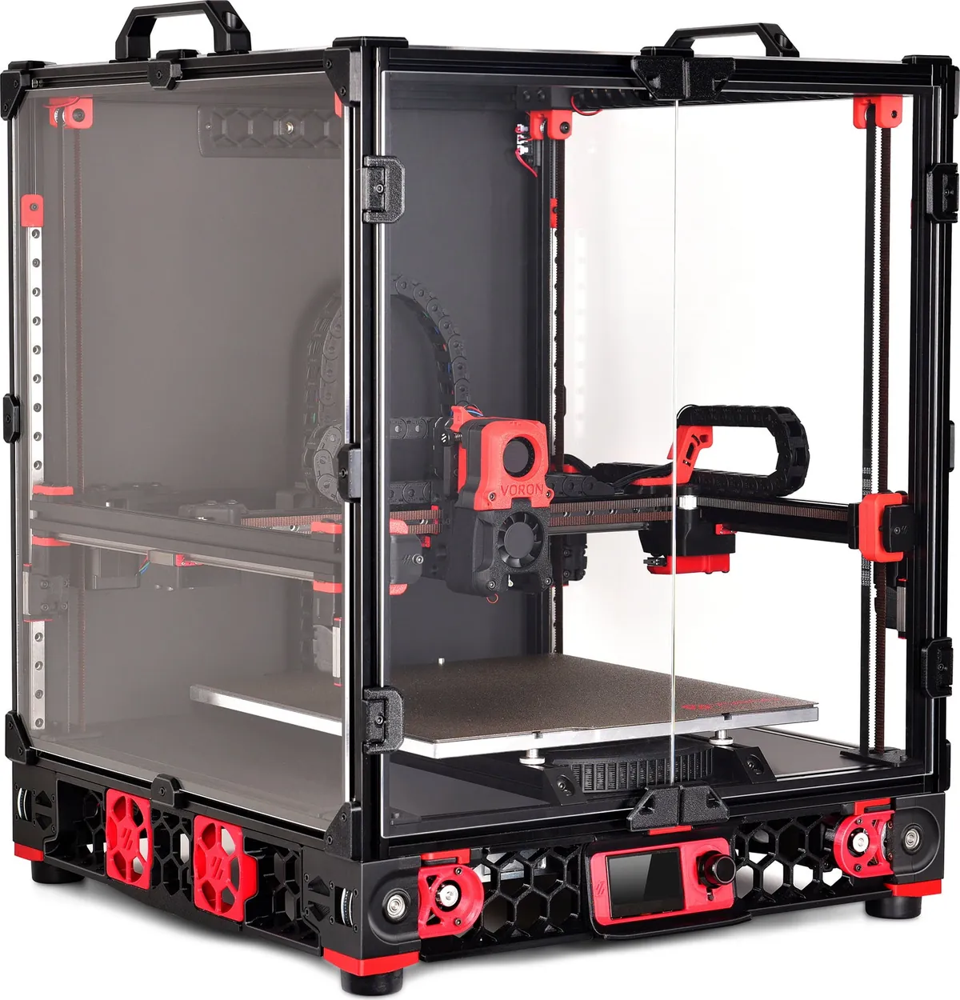
CoreXY kinematics
This design allows both motors to remain stationary on the frame, reducing moving mass and improving acceleration response.
Because no motor moves with the toolhead, inertia is greatly reduced — allowing faster, smoother, and more precise printing.
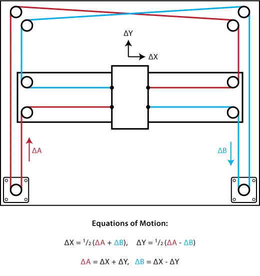
SLA vs MSLA
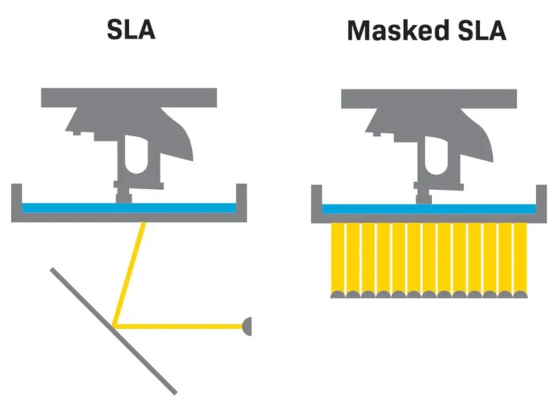
3D Printer Safety
FDM focused, plus resin and powder.
Safety systems matter: VentilateInspect wiringPPEDispose waste
Introduction to Laser Cutters
- Use focused light to cut or engrave materials.
- Motion is CNC-controlled, like 3D printers.
A laser cutter is a two-axis CNC machine whose tool is a beam of light. The head moves in X and Y, the laser switches on and off along the path, and Z only sets the focus height. Everything from section 05 about toolpaths still applies.
The Electromagnetic Spectrum
Radio, microwaves, infrared, visible light, ultraviolet, X-rays, and gamma rays are all the same thing: electromagnetic waves. The only difference is wavelength. Long waves (radio) carry little energy per photon; short waves (UV, X-ray) carry a lot.
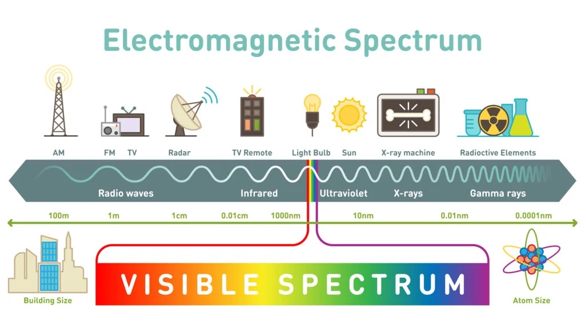
Log scale: each step to the right is a longer wavelength. The visible band is a sliver even at this zoom.
| Band | Wavelength | Everyday examples |
|---|---|---|
| Radio | over 1 m | AM and FM radio (FM is about 3 m), TV broadcast |
| Microwave | 1 mm – 1 m | Microwave ovens (about 12 cm), Wi-Fi, radar |
| Infrared | 700 nm – 1 mm | TV remotes (about 940 nm), heat, fiber and CO₂ lasers |
| Visible | 380 – 700 nm | Light bulbs, screen pixels (red, green, blue), diode lasers (blue) |
| Ultraviolet | 10 – 380 nm | Sunburn, black lights. Resin printers use 405 nm, at the violet edge of visible, usually called UV |
| X-ray | 0.01 – 10 nm | Medical and security imaging |
| Gamma | under 0.01 nm | Radioactive decay |
Laser Types & How They Work
Types of laser cutters
| Laser | Wavelength | Lecture notes |
|---|---|---|
| Diode | ~450 nm | Compact, engraves wood/leather. |
| CO₂ | 10.6 µm | Common, cuts wood, acrylic, leather. |
| Fiber | 1064 nm | For metals, industrial applications. |
Different lasers interact with different materials. Section 15 shows why.
How laser cutters work
- Focused beam vaporizes or burns material.
- Controlled by mirrors, lenses, and stepper motors.
- Engraving = shallow burn, Cutting = full penetration.
Diode and fiber machines usually put the laser source right in the head or deliver it through a fiber cable, so they skip the mirror chain.
Cut, Engrave & Machine Needs
What they can cut
- CO₂: Wood, acrylic, leather, cardboard.
- Fiber: Metals.
- Diode: Thin dark materials, paper, leather.
WoodAcrylicLeatherCardboardMetal*
*with fiber laser or marking coating
What they can engrave
Wood, acrylic, anodized aluminum, coated metals, leather, glass (with coatings).
Engraving changes the surface. Engrave = surface mark, not full cut.
CO₂ lasers frost bare glass directly. Diode and fiber lasers need a coating or marking paste to mark glass.
What laser cutters need
Toxic Materials & Safety
| Material | What goes wrong |
|---|---|
| PVC / vinyl | Releases chlorine compounds (hydrochloric acid in the air). Harmful to breathe and corrodes the machine's metal parts and optics. |
| ABS | Melts into gooey edges and gives off toxic fumes, including hydrogen cyanide. |
| Polycarbonate | Melts and catches fire instead of vaporizing. Edges turn yellow and black. |
| Fiberglass | Burning epoxy fumes plus glass fibers that do not cut cleanly. |
| Unknown plastics | No way to know which of the above it is. |
General guidance for hobby and school machines. Your shop's material list and the machine's manual come first.
Laser cutter safety
Laser Cut Lines & Color
Defining laser cut lines
- Set line width to hairline for laser cutting.
- When you print from CorelDRAW or Illustrator to our Universal Laser Systems driver (and Epilog's), a hairline stroke tells the laser it's a vector cut, not an engraving.
- Use color to define operations. Different colors = different power/speed passes.
Red for cut and blue for score is a common shop convention, not a rule. Your shop's color chart is what counts.
Hairline depends on the software
| Software | How it picks cut, score, or engrave | Line width matters? |
|---|---|---|
| Universal Laser Systems (our machine) | Print driver. Hairline strokes run as vectors; fills and thick lines raster. Each color gets its own power and speed in the driver's color settings. | Yes |
| Epilog | Print driver. Hairline (about 0.001 in) runs as vector; everything else rasters. Color mapping is optional. | Yes |
| LightBurn | Each color is a layer. You set each layer's mode (line, fill, image), power, and speed. | No |
| Glowforge | Groups the design by color into steps. You pick cut, score, or engrave for each step. | No |
| xTool Creative Space | You pick cut, score, or engrave for each object or layer. Imported colors can become layers. | No |
Understanding color spaces
- RGB color space: Red, Green, Blue (light-based).
- For full red: R = 255, G = 0, B = 0 → Hex:
#FF0000 - Hexadecimal system: base-16 counting (0–9, A–F).
#FF0000= 255 red intensity, 0 green, 0 blue.
- 8-bit color depth: each RGB channel uses 8 bits (0–255 values).
- 256³ = 16,777,216 possible colors.
- RGB vs CMYK: RGB = additive (used for screens, light). CMYK = subtractive (used for print).
#ED1C24 when it prints, which no longer matches the laser's red setting. Set laser files to RGB color mode. Sections 20 and 21 cover what these hex numbers mean.
Binary, Decimal & Hex
Hex codes like #FF0000 are numbers written in base 16. To read them, start with how counting works in any base.
Each position is worth the base times the position to its right. In binary that's 1, 2, 4, 8 … 128. In hex it's 1, 16, 256. One binary digit is a bit; eight bits make a byte, which holds 0 to 255. Four bits make exactly one hex digit, so a byte is always two hex digits.
Click any wheel to add its place value (Shift-click subtracts). With focus inside this box: Space or ↑ flip +1 · ↓ −1 · P auto-count · R reset · T next display.
Try this
- Set 1, then flip. The binary ones wheel rolls from 1 to 0 and bumps its neighbor, so 01 becomes 10.
- Set 15, then flip. Four binary wheels roll at once, and hex goes from 0F to 10 at the same moment.
- Turn on Group bits. Each group of four binary wheels spells exactly one hex digit.
- Click the 128 wheel. One click on a high position adds its whole place value.
- Set 255, then flip. Binary and hex run out of wheels, so the count overflows to 0.
| Base | Digits | Places (right to left) | 255 is | Where you see it |
|---|---|---|---|---|
| 2 · binary | 0 1 | 1 2 4 8 … 128 | 11111111 | Logic and data. Every bit is a switch: on or off. |
| 10 · decimal | 0–9 | 1 10 100 | 255 | Everyday counting. |
| 16 · hex | 0–9 A–F | 1 16 | FF | Color codes and memory addresses. |
Color Is Three Bytes
A screen color stores red, green, and blue as one byte each. A hex code is those three bytes written as six hex digits: #FF0000 is FF red, 00 green, 00 blue, the same as rgb(255, 0, 0).
Why 8 bits per channel
Laser check: one bit off
These differ by one bit and look identical on screen. Software that assigns settings by exact color, like a print driver's color mapping, treats #FE0000 as a different color, so that line can be skipped or cut with the wrong power. Some programs snap to the nearest color instead, so check what yours does.
Review Quiz
Twenty questions across the whole lecture. Think of your answer, reveal it, then mark whether you got it. Missed cards come back at the end.